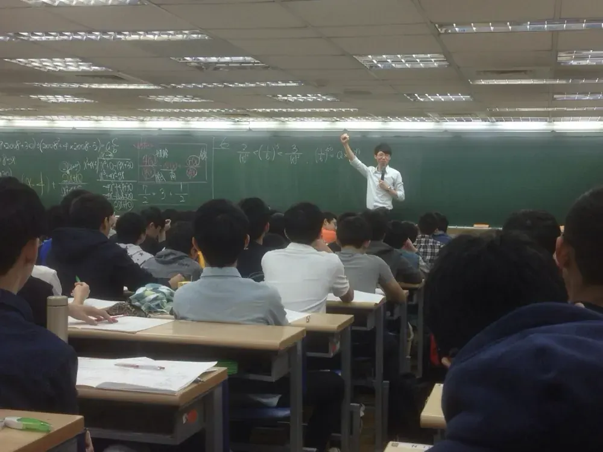
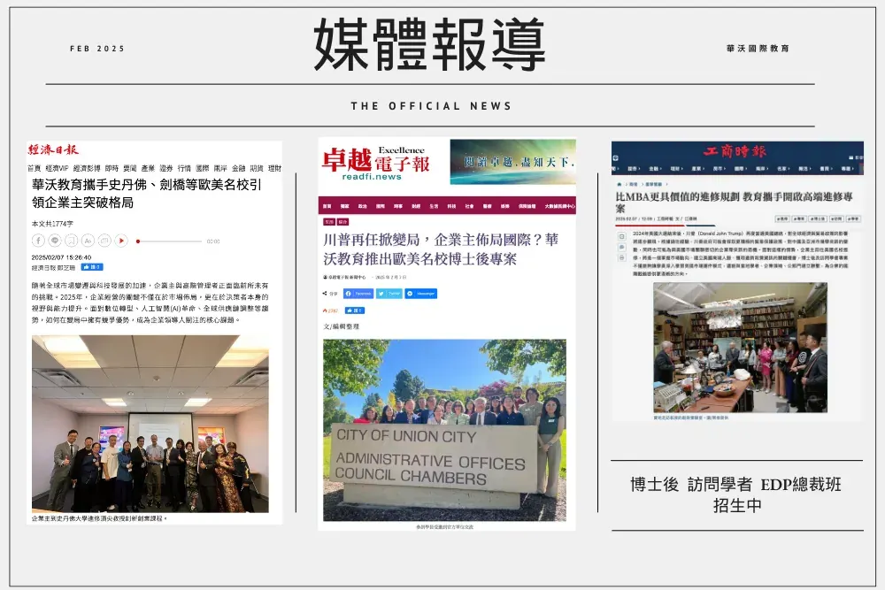
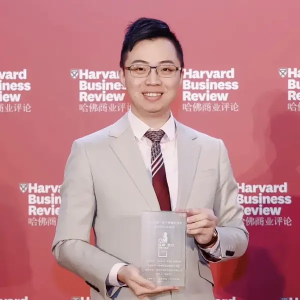
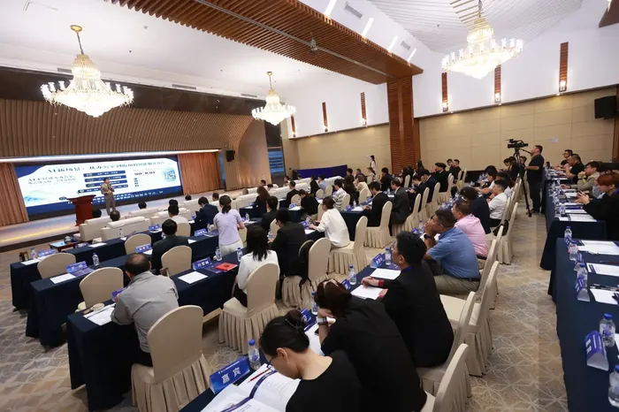
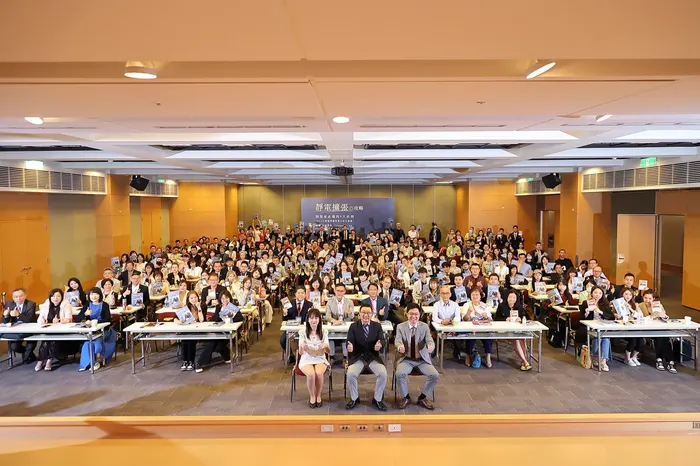

AI 正在改變顧客的需求與購買方式，你的產品與服務要如何跟上？
2027 第 9 期・AI × MANAGEMENT × SILICON VALLEY
全球企業家AI 創新與管理研究計畫
史丹佛大學・柏克萊加州大學・加州州立大學
8 個月線上進修，取得三校結業證書與國際學術經歷
創新企業與卓越人才獎學金：原則上 11 月底前送件適用
- 上課期程8 個月
- 上課形式線上直播
- 合作學校三校
- 開學2027 年 3 月
- 上課時間每月 1 次・週日上午
THE JOURNEY
從線上課堂，走向矽谷現場
從三校教授的課堂累積觀點
8 門課、三大學習主軸：AI 與新興科技、創新與資金、領導與市場。每月 1 次、台灣時間週日上午線上直播，中英雙語＋即時翻譯，不需離職。
以自己公司為題，完成 AI 企業專題
8 門課學到的方法，最後落實成一份以你自己公司為題的研究專題。教授與商業導師全程陪伴，學期間可預約教授一對一指導。
走進矽谷，與企業高層面對面交流
每年 10 月底的美國矽谷 7 天 6 夜結業之旅（選配，費用另計）：校園課程、產官學參訪、全球學術論壇與結業典禮。
授課學校
STANFORDUC BERKELEYCSU MONTEREY BAY



更大的格局，從這 8 個月開始
你缺的，可能不是 AI 工具
而是把 AI 變成經營決策的判斷力

- 公司導入了 AI 工具，卻看不出對營收與效率的實際幫助
- 想掌握矽谷的趨勢，接觸到的卻多半是二手資訊
- 想帶團隊轉型，卻不確定要從哪個部門、哪個流程開始
- 公司走不開，進修一再延後
- 人脈與視野，停留在既有的產業圈子
- 判斷力看懂 AI 對自己產業的影響，分辨長期趨勢與短期話題
- 決策方法用數據驅動決策的思維，規劃企業的 AI 應用
- 第一手觀點直接向三校教授與矽谷企業高層請益
- 彈性時程每月 1 次、週日上午線上上課，不需離職
- 國際人脈與企業主、教授及美國矽谷研究院建立長期連結
差距不在有沒有用 AI，而在會不會用 AI 做決策。
立即預約一對一諮詢↗你不是沒有經驗
而是還沒把經驗，轉化成 AI 時代的決策語言
8 個月後，帶得走的六項成果
史丹佛、柏克萊、加州州立大學三校結業證書，證書上不會有「網路班」字樣，可辦理海牙或使館公證。這是結業證書與國際學術經歷，不是學位。
- AI 企業專題以你的公司為題，完成一份研究專題
- 8 門課的經營方法涵蓋科技、創新、資金、領導與市場
- 教授一對一指導學期間可預約教授，針對你的課題請益
- 全球學術論壇發表在美國矽谷研究院全球學術論壇發表研究成果
- 三校結業證書結業取得，可列入個人的國際學術經歷
- 國際人脈網絡平均 15–20 位企業主與高階主管同班，結業後持續保持連結
＋ 結業後一年內發表國際期刊，可再取得加州州立大學頒發的第 4 張證書，論文題目會載明在證書上

一份 AI 企業專題，以你的公司為題
不只聽懂趨勢，更要帶回公司。研究方向例如：
- AI 在企業管理中的應用
- 數據驅動決策模式
- 企業國際化策略
教授與商業導師全程陪伴，兼顧學術價值與商業應用。專題聚焦在經營決策與組織應用，不需要寫程式。
選配・每年 10 月底
美國矽谷 7 天 6 夜結業之旅
- 史丹佛、柏克萊校園課程
- 產官學參訪交流：歷屆曾安排參訪 Apple Park、NVIDIA、Google、電腦歷史博物館，並拜訪 Union City 市政廳
- 美國矽谷研究院全球學術論壇，發表研究成果
- 結業典禮，與教授合照
有別於走馬看花的旅遊團
是帶著自己的課題，走進矽谷
行程安排與費用另計。另有「史丹佛 4 天 3 夜學術課程與矽谷創新之旅」（Executive Development Program at Stanford），需另外報名。*實際課程與行程規劃依照校方正式入學通知為準
AI 改變的，不只是工具
而是決策、人才與資金的流向
15%
到 2028 年，至少 15% 的日常工作決策將由代理式 AI 自主完成；2024 年這個比例是 0%。
Gartner86%
的雇主預期 AI 與資訊處理技術將在 2030 年前改變自家業務；勞動者既有技能中約 39% 將被改變或過時。
世界經濟論壇《2025 未來就業報告》40%
全球近 40% 的就業受到 AI 影響，先進經濟體約 60%。
國際貨幣基金 IMF2×
2025 年全球企業 AI 投資成長超過一倍。
史丹佛大學《AI Index》53%
生成式 AI 三年內達到 53% 的人口普及率，比個人電腦與網際網路更快。
史丹佛大學《AI Index》變化已經發生，越早看懂，越能掌握調整的時機
同一家公司，面對 AI 要回答三個問題
當 AI 進入每一個部門，你要如何帶領團隊與 AI 協作？
AI 帶來的新機會，需要多少資源？成長路徑在哪裡？
換一個對象，就要換一套經營思維
2027 年邁入第 9 期
持續帶企業主走進美國產官學界
2025 年 2 月，經濟日報、工商時報、卓越電子報相繼報導華沃與歐美名校合作的進修專案。
合作企業97家
專業課程36門
合作教授43位
合作學校與承辦單位
STANFORD UNIVERSITYUC BERKELEYCALIFORNIA STATE UNIVERSITYSILICON VALLEY RESEARCH INSTITUTESTANFORD UNIVERSITYUC BERKELEYCALIFORNIA STATE UNIVERSITYSILICON VALLEY RESEARCH INSTITUTE
學員分享學員照片 學員照片 學員照片

向三校教授與矽谷高層直接請益

Dr. Eric Tao
CSU Monterey Bay
創新研究與創業
美國矽谷研究院院長兼董事長

Bill Reichert
Stanford & UC Berkeley
Getting to Wow：現代企業領導力
Pegasus 創投合夥人，專注 AI 等深度科技投資

Dr. Christina Zhang
CSU Monterey Bay
新創融資
專長新創融資與公司治理

Dr. Ling Zong
矽谷 IBM
全球新興技術
專長新興科技與科技創投

Dr. Barry Katz
Stanford
矽谷設計思維
講授設計思維

Dr. Patricia (Patty) Wiggin
矽谷科技公司高層
競爭性行銷
曾任西門子高層

John Kelley
Stanford
矽谷新創管理與資金
專研 AI 與法律

Dr. Martha Olney
UC Berkeley
全球經濟學
柏克萊傑出教學獎得主
*2027 年師資以校方公告為準

YOUR MENTOR
Win 教授（林嘉宏）
從 18 歲台北補教界名師，到國際教育型企業家
- 臺北科技大學｜經營管理博士
- 鼎盛全球科技（股）公司｜董事長
- 愛語包容 AI（股）公司｜共創人兼營運長
- 華沃教育｜創辦人
- 史丹佛大學｜訪問學者
- 柏克萊加州大學｜訪問學者
- 美國矽谷研究院｜院士
- 美國菲利普斯研究大學｜院士
- 2024 拉姆・查蘭管理實踐獎「創新創業實踐獎」得主（《哈佛商業評論》中國年會頒發）
- 新加坡 Brands For Good 商業向善獎
- 澳洲 The CEO Institute 全球 CEO 認證
- 中國大陸最佳實戰培訓師百強
- 東南亞世界華人楷模傑出領袖獎
- 香港 8 Figure Award Winners 企業家成就獎
- 台灣臺北市優秀青年獎
- 世界華商領袖協會 理事長
- 台灣職工教育和職業培訓協會 副理事長
- 中華工商經貿科技發展協會 常務理事
- 新加坡國際奧林匹亞競賽中心 SIMCC 台灣地區主席
- 國際扶輪 3482 地區 2026-27 年度公共形象委員會 副主委
- 國際扶輪 3482 地區 2024-25 年度扶輪青年領袖獎研習營委員會 主委
- 台北景福扶輪社 2020-21 年度社長



AI 時代的下一步，先從一通電話開始
立即預約一對一諮詢↗
預約後的流程・四個步驟
- 01
來電預約一對一諮詢
撥打 02-8988-2862，跟國際招生顧問聊聊你的經歷與公司課題
- 02
顧問說明適合的身分別與方案
了解適合的身分別、上課方式與獎學金
- 03
進入申請程序
書面審查約 14 個工作天，免筆試（未錄取者全額退費）
- 04
取得正式入學許可函
2027 年 3 月開學
計畫資訊
| 項目 | 內容 |
|---|---|
| 計畫 | 全球企業家 AI 創新與管理研究計畫 |
| 合作學校 | 史丹佛大學・柏克萊加州大學・加州州立大學 |
| 上課形式 | 線上直播 8 個月＋選配美國矽谷 7 天 6 夜 |
| 開學 | 2027 年 3 月（第 9 期），滿 12 人即開班 |
| 證書 | 三校結業證書與國際學術經歷 |
| 獎學金 | 創新企業與卓越人才獎學金：原則上 11 月底前送件適用 |
身分別與費用說明
- 身分別訪問學者、博士後研究、EDP 總裁班（博士後研究為研究身分，不是學位）。書面審查，免筆試；適合的身分別依個人經歷，由顧問一對一說明。
- 費用包含課程、學術指導與證書；實體校園班另含企業參訪、住宿與課程期間餐飲。方案細節與獎學金資格，由顧問一對一說明。
8 個月・8 門課・三校教授與矽谷高層授課
2027 年 3 月開學、10 月結業｜每月 1 次・台灣時間週日上午｜每門課 3 小時＋學術期刊寫作｜中英雙語＋即時翻譯
- AI 與新興科技看懂技術趨勢，判斷哪些真正適用於你的產業
- 創新與資金把新機會變成可執行、可融資的事業計畫
- 領導與市場帶領團隊轉型，讓市場看見你的價值
01第 1 門
創新與資金
創新研究與創業
Dr. Eric Tao
CSU Monterey Bay02第 2 門
領導與市場
Getting to Wow：現代企業領導力
Bill Reichert
Stanford & UC Berkeley
03第 3 門
創新與資金
新創融資
Dr. Christina Zhang
CSU Monterey Bay04第 4 門
AI 與新興科技
全球新興技術
Dr. Ling Zong
矽谷 IBM
05第 5 門
領導與市場
矽谷設計思維
Dr. Barry Katz
Stanford06第 6 門
領導與市場
競爭性行銷
Dr. Patricia (Patty) Wiggin
矽谷科技公司高層
07第 7 門
創新與資金
矽谷新創管理與資金
John Kelley
Stanford08第 8 門
AI 與新興科技
全球經濟學
Dr. Martha Olney
UC Berkeley
*2027 年師資以校方公告為準
三校與矽谷研究院
站在世界 AI 研究的源頭學習
史丹佛大學
坐落於矽谷核心，擁有 58 名諾貝爾獎得主；校友創辦 Google、Yahoo、Nike 等企業。
柏克萊加州大學
US News 全美最佳公立大學第 1 名，產生過 72 名諾貝爾獎得主，在電腦科學、人工智慧等領域享譽國際。
加州州立大學
全美最大的高等教育系統，本計畫由蒙特雷灣分校（CSU Monterey Bay）授課。
SVRI本計畫由美國矽谷研究院（SVRI）承辦，與三校合作開設研究中心專案，邀請矽谷大型科技企業高層授課，並舉辦全球學術論壇。
國際舞台現場・同一套方法，在不同城市與市場持續發生
台北北京深圳東京新加坡吉隆坡金邊雅加達曼谷加州賓州劍橋台北北京深圳東京新加坡吉隆坡金邊雅加達曼谷加州賓州劍橋
如果你的企業，
正準備迎接 AI 轉型
帶著你公司的 AI 課題進場。創新企業與卓越人才獎學金，原則上 11 月底前送件適用；資格由國際招生顧問一對一說明。
常見問題
01這是 AI 技術課嗎？需要會寫程式嗎？
不需要。核心是經營決策：看懂 AI 對產業的影響，並應用在管理、資金與市場策略上。
02這是學位課程嗎？
不是。本計畫以訪問研究的形式進行，結業取得史丹佛、柏克萊、加州州立大學三校結業證書，並可列入個人的國際學術經歷。身分別中的博士後研究為研究身分，不是學位。
03我不在科技業，也適合嗎？
適合。AI 正在影響各行各業，研究專題以你自己的產業與公司為題。
04我已經完成 EMBA 或其他高階進修，這個計畫有什麼不同？
本計畫以訪問研究的形式進行，重點在 AI 趨勢、矽谷實務與以自己公司為題的研究專題，與既有的進修經歷相輔相成。
05英文不好，可以參加嗎？
可以。中英雙語授課，加上即時翻譯，免語言成績。
06工作很忙，時間排得出來嗎？
可以。每月 1 次，台灣時間週日上午，每次 3 小時，不需離職，也不需長住美國。
07需要去美國嗎？要辦簽證嗎？
線上直播班全程線上，不需出國。若選配赴美行程，團隊會提供赴美簽證所需資料，協助辦理簽證手續。
08上完課，公司就能成功導入 AI 嗎？
不保證。課程提供方法、案例與教授指導；實際成效仍取決於企業的產品、營運與後續執行。
09一定要發表期刊嗎？
不一定。結業即可取得三校結業證書；結業後一年內發表國際期刊，可再取得第 4 張證書。
10網路班證書和實體班一樣嗎？
一樣，證書上不會有「網路班」字樣，並可辦理海牙或使館公證。
11費用包含什麼？未錄取怎麼辦？
費用包含課程、學術指導與證書；實體校園班另含企業參訪、住宿與課程期間餐飲。審查約 14 個工作天，錄取者等候入學，未錄取者全額退費。方案細節與獎學金資格，由顧問一對一說明。
讓你 與 AI 時代同步
從看懂 AI 趨勢，到帶領企業轉型
跟國際招生顧問聊聊你的經歷與公司課題，了解適合的身分別、上課方式與獎學金。
2027 年 3 月開學｜滿 12 人即開班｜創新企業與卓越人才獎學金：原則上 11 月底前送件適用